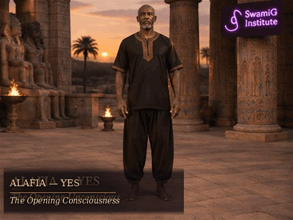
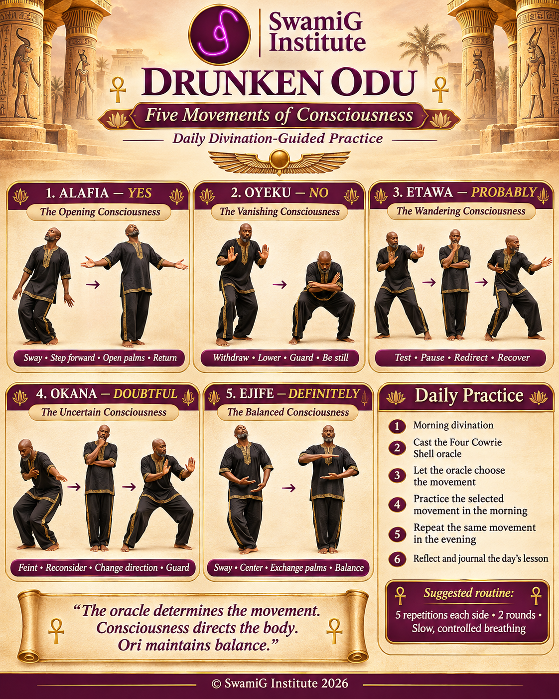
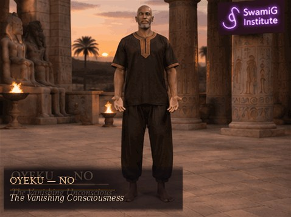
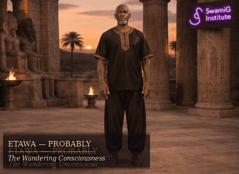
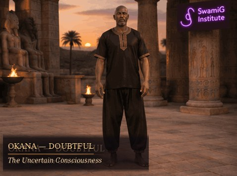
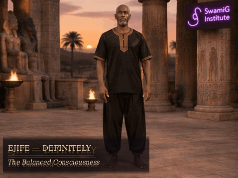

01 4 OPEN · YES
ALAFIA
The Opening Consciousness
Sway → Step forward → Open palms → Return
Practice acceptance, uplift, and a deliberate return to center.
Five Movements of Consciousness
One oracle cast directs the day's movement. Practice in the morning. Repeat the same movement in the evening. Let the body express the lesson while Ori remains centered.
“The oracle determines the movement. Consciousness directs the body. Ori maintains balance.”

01 / THE DAILY CAST
Select the result of your actual Four Cowrie Shell cast. The same movement governs both sessions today; this page does not perform the divination for you.
Today
Your selection is saved on this device for today's date. Change it only to correct the recorded cast.
TODAY'S MOVEMENT
Choose the oracle response above to reveal today's movement and practice guidance.
02 / THE FORMS
Each short loop shows the opening movement, the change in direction or level, and the return to a stable stance.
Animation study: observe first, then practice slowly at your own pace.

01 4 OPEN · YES
The Opening Consciousness
Sway → Step forward → Open palms → Return
Practice acceptance, uplift, and a deliberate return to center.

02 0 OPEN · NO
The Vanishing Consciousness
Withdraw → Lower → Guard → Be still
Practice restraint, boundaries, and gentle protective movement.

03 3 OPEN · PROBABLY
The Wandering Consciousness
Test → Pause → Redirect → Recover
Practice patience, inquiry, and adjustment without rushing.

04 1 OPEN · DOUBTFUL
The Uncertain Consciousness
Feint → Reconsider → Change direction → Guard
Practice discernment, caution, and the freedom to change course.

05 2 OPEN · DEFINITELY
The Balanced Consciousness
Sway → Center → Exchange palms → Balance
Practice certainty expressed through equilibrium—not simply a stronger Yes.
03 / DAILY DISCIPLINE
Use the same response for both practices on a given day. Tomorrow begins with a fresh divination.
MORNING · ACTIVATION
EVENING · INTEGRATION
04 / INTEGRATION
The record is kept only in this browser on this device. You can export your practice history as a CSV file for safekeeping.
This proposed SwamiG Institute movement discipline is a contemporary creative adaptation, not a claim of an established historical Ifá martial-arts lineage. Practice sober, on a clear nonslip surface, with natural breathing and small, controlled movements. Avoid intentional falls, forced twisting, and partner contact without qualified supervision. Stop if dizzy or in pain.
For the broader Odu Ara teachings, visit oduchi.com.